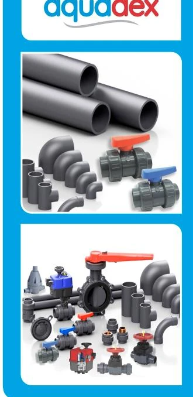

Performance
Corrosion resistant, lightweight and durable, with a smooth bore that supports efficient water flow.
UPVC Pressure Pipe System
A permanent solution for main potable water supply, distribution and transmission systems.

Aquadex pressure pipe system is a permanent solution for the main potable water supply pipeline. Aquadex pipes are safe for cold potable water distribution and transmission systems and can also be used for transportation of certain chemicals; for special applications, Dadex Technical Department should be contacted.
Key technical information is presented openly for quick reference. Nothing essential is hidden behind an accordion.
| Material | Unplasticised polyvinyl chloride (UPVC) |
|---|---|
| Appearance | Dark grey colour |
| Pipes standard | BS 3505; BS EN 1452 |
| Fittings standard | BS EN 1452-3 (Imported) |
| Available diameters | ¾”, 1”, 1¼”, 1½”, 2”, 2½”, 3”, 4”, 5”, 6” and 8” |
| Standard lengths | 4 m and 6 m |
| Pressure classes | Class B (6 bar), Class C (9 bar), Class D (12 bar), Class E (16 bar) |
| Other sizes | Can be manufactured against confirmed orders. |
| Jointing method | Solvent cement jointing and Z-joint with rubber rings. |
Corrosion resistant, lightweight and durable, with a smooth bore that supports efficient water flow.
Aquadex pipes and fittings are manufactured and specified against the standards listed above.
Solvent cement and rubber-ring Z-jointing options support straightforward installation.
Approved product literature can be connected here as the resource library is finalized.
Contact Dadex for product information and technical assistance.